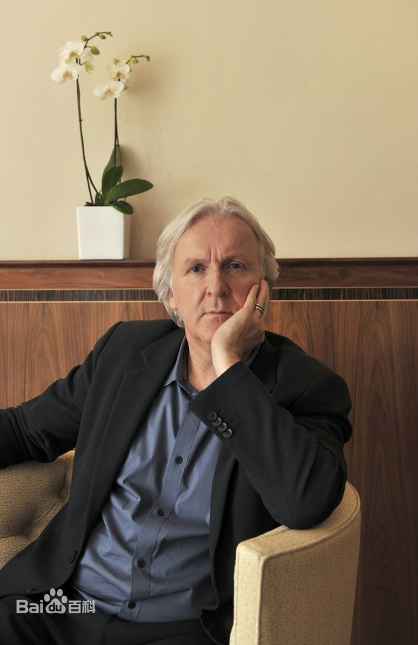
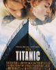

詹姆斯•卡梅隆
詹姆斯·卡梅隆（James Cameron），1954年8月16日出生于加拿大安大略省，好莱坞电影导演、编剧。
1981年，执导首部电影《食人鱼2:繁殖》。1984年，因自编自导科幻电影《终结者》成名。1986年，自编自导电影《异形2》。1991年，凭借电影《终结者2》获得第18届土星奖最佳导演奖以及最佳编剧奖。1994年，执导电影《真实的谎言》。1997年，他执导的电影《泰坦尼克号》取得了18.4亿美元的票房，打破全球影史票房纪录；该片在第70届奥斯卡金像奖上获得了包括最佳影片在内的11个奖项，詹姆斯·卡梅隆凭借该片获得了奥斯卡奖最佳导演奖。
2005年，他被英国杂志《Empire》评为“世界最伟大的20位导演之一”。2009年12月，他执导的科幻电影《阿凡达》上映，该片全球总票房超过27亿美元，再次打破了由他自己保持的全球影史票房纪录。2010年，入选《时代周刊》评出的“全球最具影响力人物”；同年他获得美国视觉效果工会奖终身成就奖。2011年，获得美国制片人工会奖里程碑奖。
代表作品
|  | |||
|---|---|---|---|
| 《泰坦尼克号》 | 《终结者》 | 《异形2》 | 《阿凡达》 |